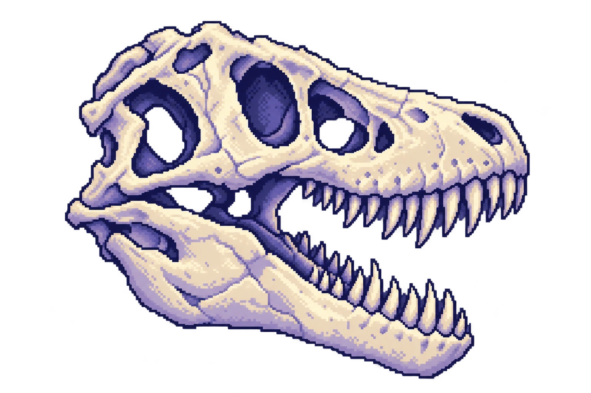

01 / DINOSSAUROS
Uma curiosidade
pré-histórica.
Gosto de dinossauros. E um T. rex em pixel art tinha que encontrar seu lugar por aqui.

CURIOSIDADES / FORA DO CÓDIGO
Alguns gostos, histórias e coisas que fazem parte de quem eu sou.
01 / DINOSSAUROS
Gosto de dinossauros. E um T. rex em pixel art tinha que encontrar seu lugar por aqui.

02 / NA MINHA ESTANTE
Mary Shelley
João Ubaldo Ribeiro
Graciliano Ramos
03 / MÚSICA DO MOMENTO
Coldplay
Preparando a faixa…
04 / HOMELAB
Raspberry Pi 5, infraestrutura e automação. Um espaço para testar arquiteturas, explorar segurança e aprender fazendo.
Ver o que ando construindo →